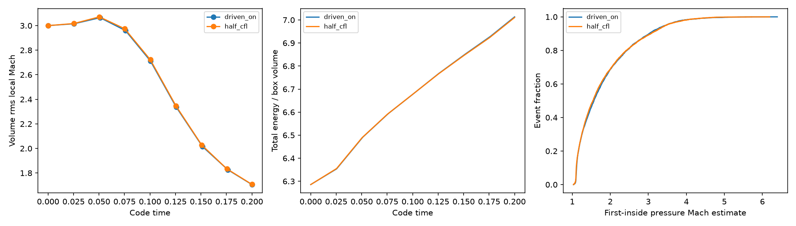

32³cells,4096tracers, initial Mach3, rms acceleration10, t=0.2. Normal forcing remains blocked unless experimental_forcing=true. Scientific approval pending.
All saved on/off fluid, force and particle data agree exactly; zero episodes in smooth shear;896completed-step samples synchronize; restart preserves49152rows and556censored records.
Native RK2 force adds excess gas heat: 3rho|a|²dt²/8 in the shear oracle. This physical check fails. The driver was not changed. First-inside Mach estimates below remain uncertified.
7063completed/556open at CFL.30;7744/520at CFL.15:9.64%joint sensitivity, not convergence evidence. Total energy includes actual forcing work and native source bias.

Full methods, limits and rerun instructions · Exact measurements